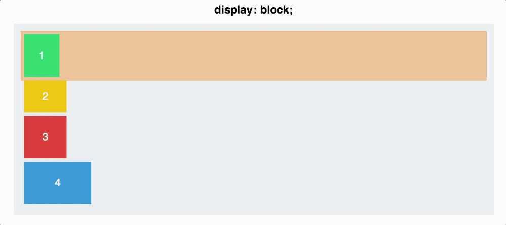
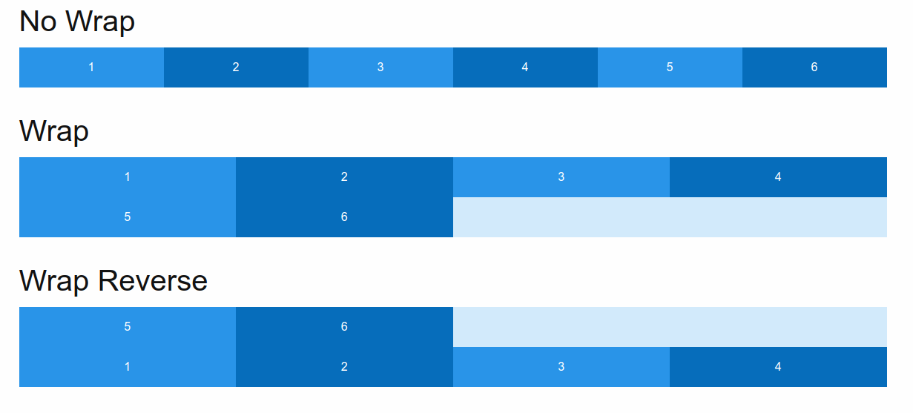

RWD + Flexbox
created by Nastassia Kracheuskaya
What is RWD?
What is RWD?
Responsive web design (RWD) is an approach to web design that makes web pages render well on a variety of devices and window or screen sizes.
Three main principles that bind all responsive sites:
- Fluid Grid Systems
- Fluid images
- Media Queries
Fluid Grid Systems
Fixed layout
Fluid layout

How does it work?
Rather than pixels, all page elements are sized by proportion
Target size / context = relative size
(960 / 1280) * 100 = 75%
how does it work?

Fluid Images
Techniques
Simple Fluid image
img {
max-width: 100%;
height: auto;
}
Better Solution
Is to measure the width of the image as a percentage of the overall width of the page and use max and/or min width on the image in pixels as upper and lower limits
Media Queries

Breakpoints
/* Extra small devices (phones, 600px and down) */
@media only screen and (max-width: 600px) {...}
/* Small devices (portrait tablets and large phones, 600px and up) */
@media only screen and (min-width: 600px) {...}
/* Medium devices (landscape tablets, 768px and up) */
@media only screen and (min-width: 768px) {...}
/* Large devices (laptops/desktops, 992px and up) */
@media only screen and (min-width: 992px) {...}
/* Extra large devices (large laptops and desktops, 1200px and up) */
@media only screen and (min-width: 1200px) {...}
Orientation Portrait/Landscape
@media only screen and (orientation: landscape) {
body {
background: red;
}
}
Advantages of using responsive web design
- Faster Mobile Development at Lower Costs
- Lower Maintenance Needs
- Easier Analytics Reporting
Flexbox
container
default viev
display: flex

Properties for the Parent
(flex container)
- flex-direction
- justify-content
- align-items
- align-content
- flex-wrap
flex-direction
CSS property sets how flex items are placed in the flex container defining the main axis and the direction (normal or reversed).
- row (default)
- row-reverse
- column
- column-reverse
flex-direction
justify-content
This defines the alignment along the main axis.
- flex-start (default)
- flex-end
- center
- space-between
- space-around
- space-evenly
justify-content
align-items
This defines the default behavior for how flex items are laid out along the cross axis on the current line.
- flex-start
- flex-end
- center
- baseline
- stretch (default)
align-items
align-content
It helps aligning a flex container's lines within it when there is extra space in the cross-axis.
Note: this property has no effect when there is only one line of flex items.
- flex-start
- flex-end
- center
- space-between
- space-around
- stretch (default)
align-content
flex-wrap
CSS property sets whether flex items are forced onto one line or can wrap onto multiple lines. If wrapping is allowed, it sets the direction that lines are stacked.
- nowrap (default)
- wrap
- wrap-reverse
flex-wrap
Properties for the Children
(flex items)
- order
- flex-grow
- flex-shrink
- flex-basis
- flex
- align-self
order
The order property controls the order in which flex items appear in the flex container
.item {
order: ; /* default is 0 */
}
flex-grow
CSS property sets how much of the available space in the flex container should be assigned to that item
.item {
flex-grow: ; /* default 0 */
}
flex-shrink
This defines the ability for a flex item to shrink if necessary.
.item {
flex-shrink: ; /* default 1 */
}

flex-basis
This defines the default size of an element before the remaining space is distributed. It can be a length or a keyword.
.item {
flex-basis: | auto; /* default auto */
}
flex
It is a shorthand for flex-grow, flex-shrink, and flex-basis.
.item {
flex: none | [ <'flex-grow'> <'flex-shrink'>? || <'flex-basis'> ]
}
align-self
This allows the default alignment (or the one specified by align-items) to be overridden for individual flex items.
- auto
- flex-start
- flex-end
- center
- baseline
- stretch